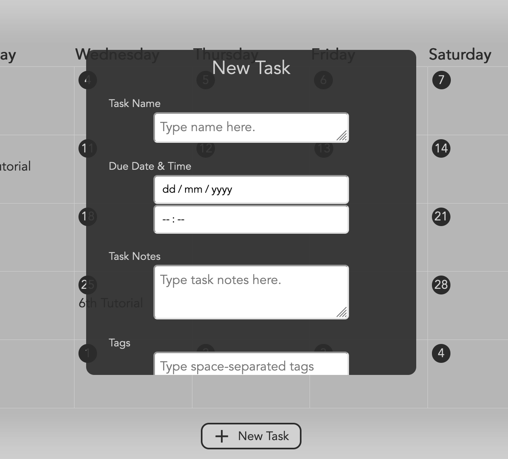
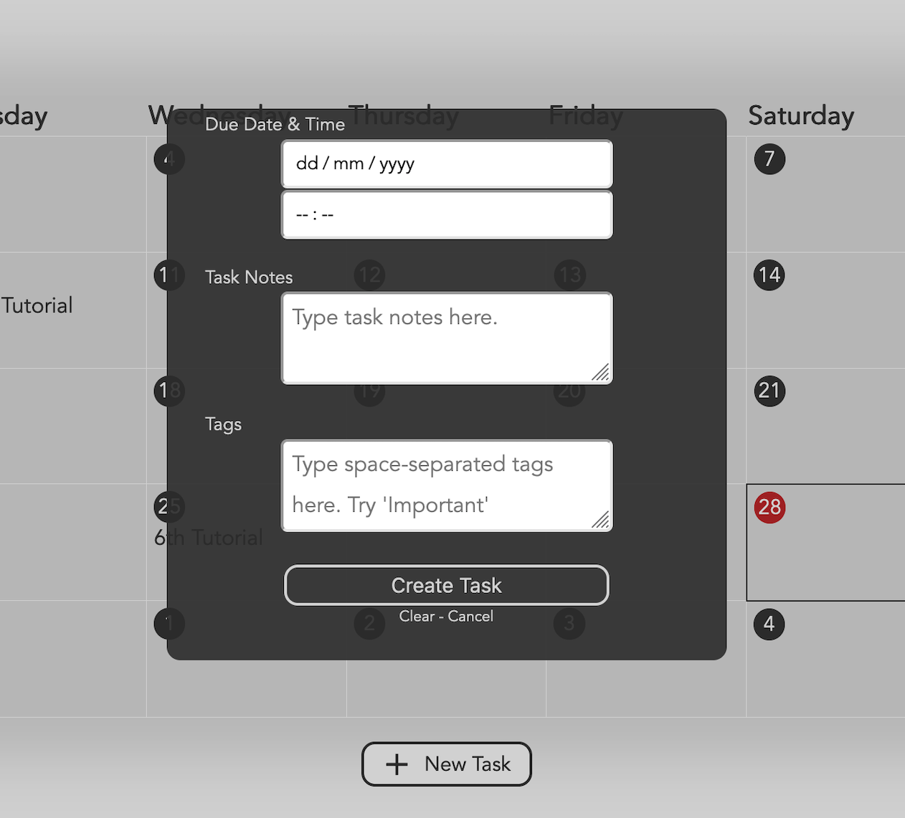
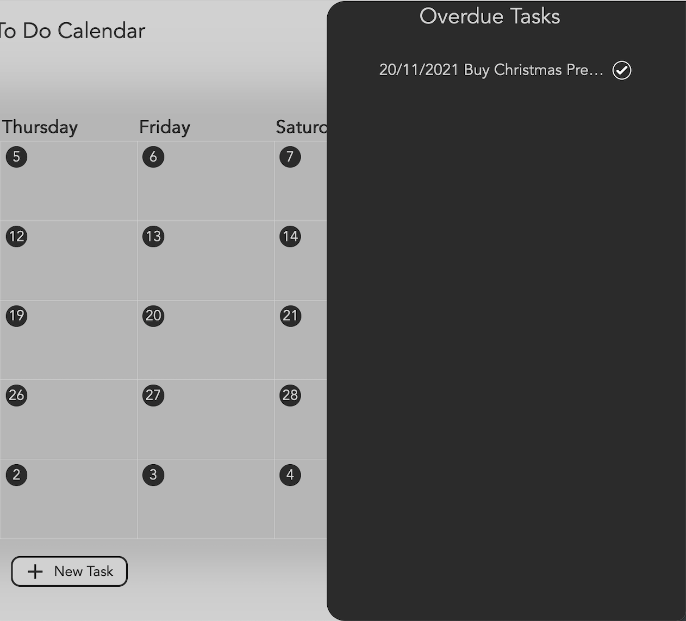
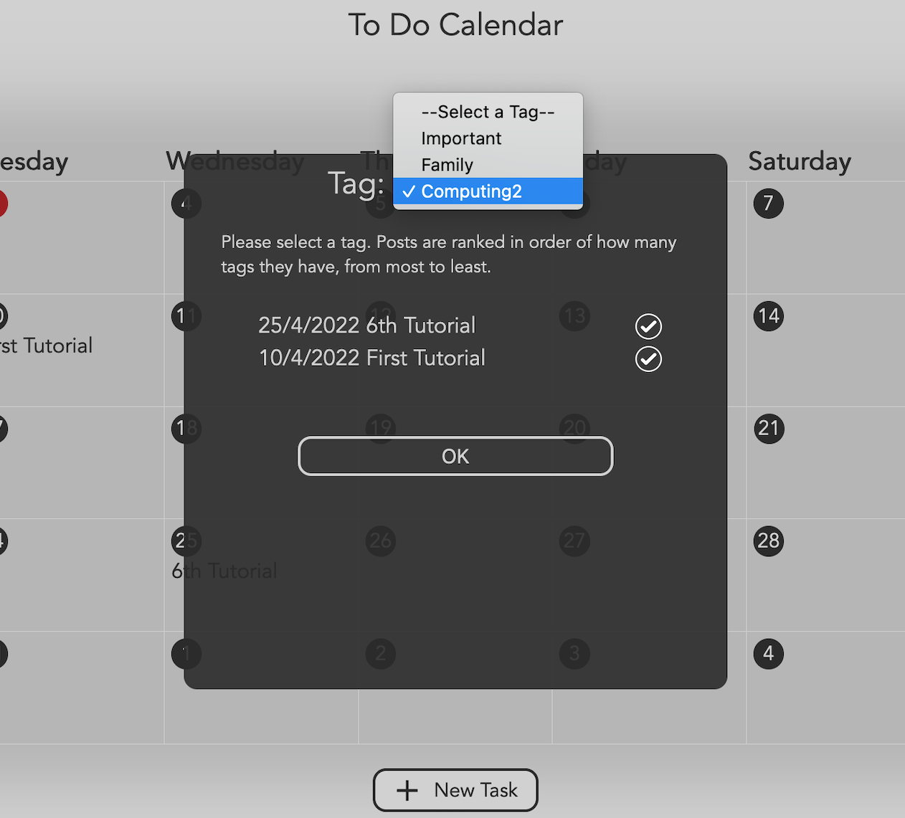

Computing 2
I made a to-do list calendar for my Computing 2 Webapp. I haven't found a way to host a JavaScript server on GitHub Pages, but you can see the code in the repo below.
A complete HTML, CSS and JavaScript webapp for organising tasks in a calendar format, this project uses an neDB database to store information.
View Code on Github
Create a new task

Create a new task

View overdue tasks

Sort tasks by tag
